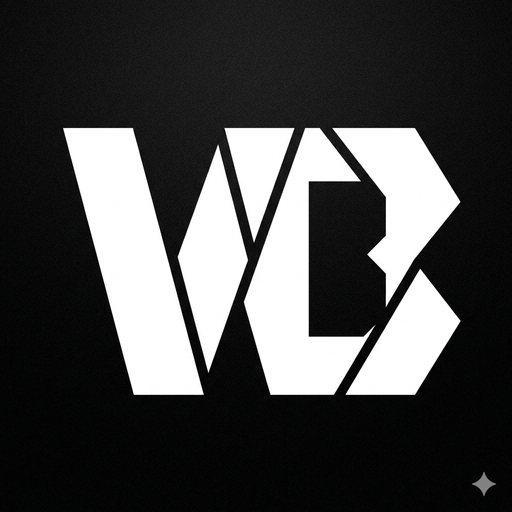
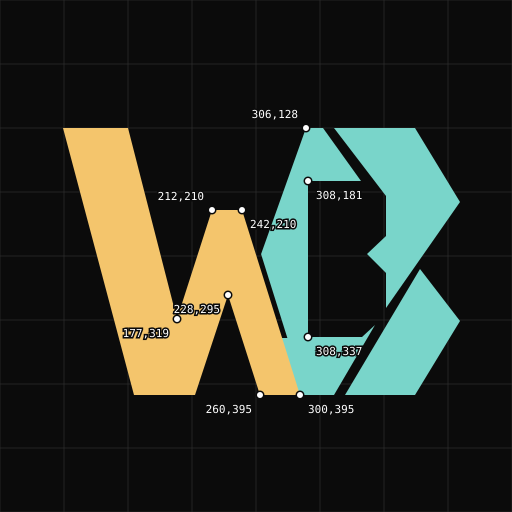

Wabbazzar / monogram study 01
A W that crosses into the B.
Two distinct lower points give the W its rhythm. Its middle stroke passes over the B’s spine, then the letters meet at the lower foot.

Original
The detached inner pieces favor a single V-shaped reading.

W over B
A connected central rise and a shared lower foot retain the angular ribbon construction.

Coordinates and crossover
The gold W runs in front of the teal B. The final rising arm belongs to both letters. All points use the original 512 × 512 canvas; the diagram labels the most useful edit handles.

| Feature | Coordinates |
|---|---|
| First inner valley | 177,319 |
| Central crest | 212,210 → 242,210 |
| Lower central notch | 228,295 |
| W’s second foot | 260,395 → 300,395 |
| Shared rising arm | 244,302 → 306,128 |
| B counter spine | 308,181 → 308,337 |
| Overpass clearance | 5 units each side |
| Joined heel resumes | y = 338 |